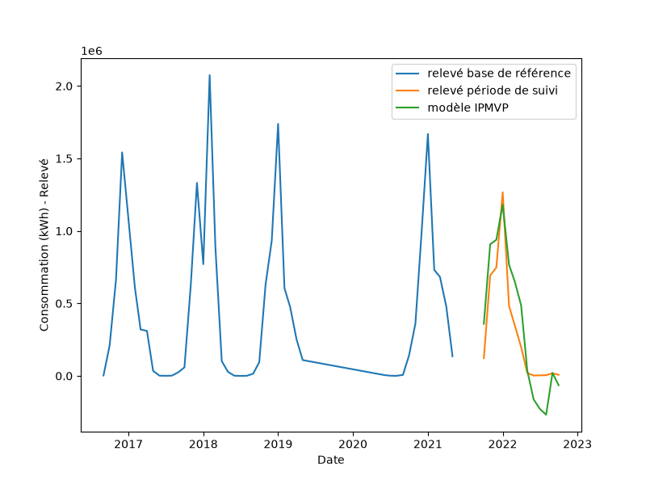

Mesure des économies
Ce chapter isole le calcul et la revue des économies produites par
Mathematical_Models : les deux approches ANTE-POST / POST-ANTE, la figure du
model, et l’incertitude propagée de l’économie annoncée.
Code à copier
import pandas as pd
from datetime import datetime
from IPMVP.IPMVP import Mathematical_Models, incertitude_savings
# --- Données + ajustement (voir chapitre Exemple complet) ---
df = pd.read_excel("src/IPMVP/IPMVP_input.xlsx")
df["Mois"] = pd.to_datetime(df["Mois"])
df = df.set_index("Mois")
col_conso = [c for c in df.columns if c.lower().startswith("consommation")][0]
X, y = df[["DJU"]], df[col_conso]
res = Mathematical_Models(
y, X,
datetime(2016, 9, 1), datetime(2021, 5, 1),
datetime(2021, 10, 1), datetime(2022, 10, 1),
degree=1, seuil_z_scores=3, site="exemple_site",
print_report=True, # produit eco-ANTE-POST.png / eco-POST-ANTE.png
)
df_bl, df_savings = res[1], res[8]
# --- Revue des économies ---
print("=== ÉCONOMIES ANTE-POST / POST-ANTE (df_savings) ===")
print(df_savings)
print("\nÉconomie ANTE-POST (%) :", df_savings.loc["pourcentage d'économie>0", "ANTE-POST"])
print("Économie POST-ANTE (%) :", df_savings.loc["pourcentage d'économie>0", "POST-ANTE"])
# --- Incertitude propagée de l'économie annoncée ---
rmse = float(df_bl.loc["rmse"].iloc[0])
ddof = float(df_bl.loc["ddof"].iloc[0])
mask = (y.index >= datetime(2016, 9, 1)) & (y.index <= datetime(2021, 5, 1))
moyenne = float(y[mask].mean())
inc = incertitude_savings(
rmse, ddof, moyenne,
gain_pct=0.18, duree_contrat_mois=60, duree_reporting_mois=12,
niveau_confiance=0.9,
)
print("\n=== INCERTITUDE PROPAGÉE (incertitude_savings) ===")
print("contrat (60 mois) :", inc["contrat"])
print("reporting (12 mois) :", inc["reporting"])
Results
df_savings — les deux approches de calcul :
ANTE-POST POST-ANTE
Relevé de consommation 3914387.73 19655625.79
Prédiction 4624795.55 16156026.80
pourcentage d'économie>0 18.15 17.80
ANTE-POST : model établi on la référence, appliqué à la period de suivi → économie = prédiction − mesuré = 18,15 %.
POST-ANTE : model établi on la period de suivi, appliqué à la référence (utile si la référence est trop courte for un model fiable) → 17,80 %.
incertitude_savings — précision de l’économie annoncée (niveau 90 %) :
contrat (60 mois) : {'mois': 60, 'economie_kwh': 5335141.89,
'precision_absolue_kwh': 3078077.25, 'precision_relative': 0.577}
reporting (12 mois) : {'mois': 12, 'economie_kwh': 1067028.38,
'precision_absolue_kwh': 1376557.99, 'precision_relative': 1.290}
La précision relative s’améliore with la durée cumulée (0,58 on 60 mois contre 1,29 on 12 mois) : plus la period d’observation est longue, plus l’économie annoncée est robuste au sens IPMVP.
Figure produite
print_report=True génère eco-ANTE-POST.png : relevé de référence, relevé
de suivi et model IPMVP appliqué à la period de suivi.
{kind=link}
